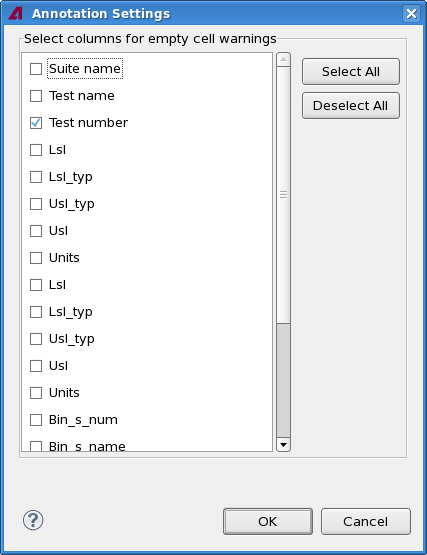
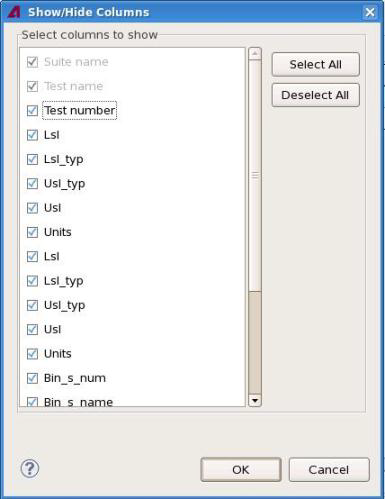

Test table editor
The test table editor is a tabular Eclipse editor that lets you set up and edit test tables, in which you can store test numbers, test limits, and other test related data. In particular, you can use it to edit TMLimits objects.
The table view itself is largely a standard Eclipse table view; see the Eclipse documentation for information on performing basic tasks like sorting, editing cells, or reformatting the table.
The SmarTest-specific elements are described below.
Test table interface elements
All SmarTest-specific interface elements are contained in the shortcut menu opened by right-clicking in the table:
- Show in Result Tool: Opens the Integrated Result Tool. It requires that you already have loaded the data log with the test's results.
- Annotation Settings: Opens the Annotation Settings dialog in which
you can select all columns that trigger an "empty cell" annotation in any row in which they are empty:

- Paste to New Rows: Inserts the row or rows from the clipboard above the selected row.
- Add Row: Choosing this command adds a row above the selected row to the test table.
- Delete Rows: Choosing this command deletes the selected rows from the test table.
- Add Column: Choosing this command adds a column to the test table.
- Delete Columns: Choosing this command deletes the selected columns from the test table.
- Show/Hide Columns: Opens the Show/Hide Columns dialog in which you
can select the columns to show in the test table:

This column configuration is only valid for the currently loaded test table. If you reload the test table or load a different one, SmarTest shows again all available columns.
- Test Numbering Preferences: Choosing this command opens the test
numbering preferences, as described in Test numbering
settings.
This command is available only if a cell in the test number column is selected.
- Generate Test Numbers: Choosing this command generates new test
numbers for the selected cells according to the current settings. See Generating test numbers from the SmarTest GUI
for details.
This command is available only if a cell in the test number column is selected.
- Clear Test Numbers: Choosing this command removes existing test
numbers from the selected cells.
This command is available only if a cell in the test number column is selected.
The other commands in the shortcut menu are standard Eclipse commands.
Annotations
The test table editor can indicate empty cells by displaying icons in the window borders and by coloring the cell backgrounds.
Which columns are to be monitored is specified in the Annotation Settings dialog (see the Annotation Settings shortcut menu command, above).
You an change the appearance of the annotations in the Table Annotations preference page.
Test table template file
You can create a test table file named TestTableTemplate.csv within the <device>/testtable folder. SmarTest uses this file as template for each new test table file you create afterwards.
That is, if the TestTableTemplate.csv file exists SmarTest uses it as template. If it does not exist SmarTest will automatically generate it, based on the current test table file layout and stores it in the <device>/testtable folder.
Functional changes
- Introduced in SmarTest 6.5.0
- SmarTest 7.2.1: Added the Paste to New Row command.
- SmarTest 7.3.1: Added the Annotation Settings and Show/Hide Columns command.
- SmarTest 7.3.1: Added support for test table template files.